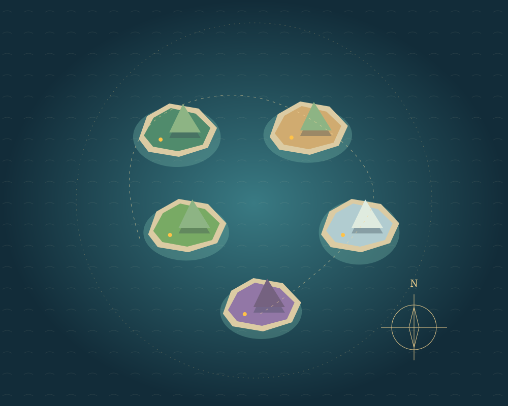

Preparing local textures and terrain
This game requires WebGL 2. Try an updated desktop browser with hardware acceleration.
AN ARCHIPELAGO OF YOUR OWN
Arrive with nothing.
Build a home worth sailing back to.
Five wild islands. Quiet caves. A thousand small comforts.
Gather, craft, voyage, and turn a forgotten shore into your sanctuary.
Desktop · keyboard + mouse · WebGL 2
Private browser saves. No account. All assets served locally.

The outer storm has claimed this voyage.
Your safe checkpoint remains ashore.
VOYAGE ENDED
The warning buoys are behind you. Your camp is not lost.
Restore your last safe checkpoint, or begin another life in a different slot.
Restoring is an explicit rewind. This voyage cannot resume beyond the storm.